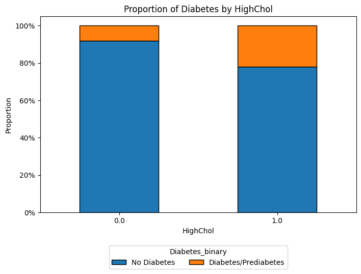

I decided to to do my project on diabetes risk prediction. Diabetes is a major health condition affecting many people and is directly linked to serious conditions such as heart disease, strokes, and kidney failure. This makes addressing diabetes especially important.
Data
For this project, I decided to use Diabetes Health Indicators Dataset from Kaggle. The dataset contains various health indicators and whether the person has diabetes or not. The dataset can be found here or on UCI Machine Learning Repository here.
This dataset is extracted from Behavioral Risk Factor Surveillance System (BRFSS), which is a national survey conducted by the Centers for Disease Control and Prevention (CDC) in the United States. The survey collects data on various health-related behaviors, chronic conditions, and use of preventive services among adults aged 18 years or older. The dataset includes information on demographics, health status, and diabetes-related indicators. This dataset extracted form 2015 survey. This dataset contains 21 predictors and has 253,680 records.
#
Variable
Type
Description
Missing Values
1
Diabetes_binary
Target, Binary
Diabetes status; 0 = No diabetes, 1 = Prediabetes or diabetes
No
2
HighBP
Feature, Binary
High blood pressure; 0 = No, 1 = Yes
No
3
HighChol
Feature, Binary
High cholesterol; 0 = No, 1 = Yes
No
4
CholCheck
Feature, Binary
Checked cholesterol in past 5 years; 0 = NO, 1 = Yes
No
5
BMI
Feature, Integer
Body Mass Index
No
6
Smoker
Feature, Binary
Smoked at least 100 cigarettes in lifetime; 0 = No, 1 = Yes
No
7
Stroke
Feature, Binary
Ever had a stroke; 0 = No, 1 = Yes
No
8
HeartDiseaseorAttack
Feature, Binary
Coronary heart disease or myocardial infarction; 0 = No, 1 = Yes
No
9
PhysActivity
Feature, Binary
Engaged in physical activity in past 30 days (excluding work); 0 = No, 1 = Yes
No
10
Fruits
Feature, Binary
Consumes fruit at least once per day; 0 = No, 1 = Yes
No
11
Veggies
Feature, Binary
Consumes vegetables at least once per day; 0 = No, 1 = Yes
No
12
HvyAlcoholConsump
Feature, Binary
Heavy alcohol consumption (men >14 drinks/week, women >7 drinks/week); 0 = No, 1 = Yes
No
13
AnyHealthcare
Feature, Binary
Has any healthcare coverage; 0 = No, 1 = Yes
No
14
NoDocbcCost
Feature, Binary
Needed to see a doctor but did not due to cost; 0 = No, 1 = Yes
No
15
GenHlth
Feature, Integer
General health rating; 1 = Excellent, 2 = Very good, 3 = Good, 4 = Fair, 5 = Poor
No
16
MentHlth
Feature, Integer
Number of days mental health was not good in past 30 days; Scale: 1–30
No
17
PhysHlth
Feature, Integer
Number of days physical health was not good in past 30 days; Scale: 1–30
No
18
DiffWalk
Feature, Binary
Serious difficulty walking or climbing stairs; 0 = No, 1 = Yes
Education level; 1 = Never attended school or only kindergarten, 2 = Grades 1–8, 3 = Grades 9–11, 4 = Grade 12 or GED, 5 = College 1–3 years, 6 = College 4+ years
No
22
Income
Feature, Integer
Household income level; 1 = Less than $10,000, 2 = $10,000 to <$15,000, 3 = $15,000 to <$20,000, 4 = $20,000 to <$25,000, 5 = $25,000 to <$35,000, 6 = $35,000 to <$50,000, 7 = $50,000 to <$75,000, 8 = $75,000 or more
No
Diabetes_binary is the target variable. It is a binary variable indicating whether a person has diabetes or not. 0 indicates no diabetes and 1 indicates prediabetes or diabetes.
For this project, GenHlth, Age, Education and Income are categorical ordinal features; BMI, MentHlth and PhysHlth are continuous features; and all other features are binary.
Flow of this Report
This report will start with various questions I tried to look into and answer. Each question will contain the results, and some analysis as well as discussion of the process and results. Then, there will be an “Impact” section to discuss the potential impact of this work. Finally, there will be conclusion section to summarize the main results od the project.
Questions
Diabetes risk prediction involves not only modeling techniques but also understanding the underlying relationships in the data. In this section, I outline specific research questions and hypotheses that guide my analysis. I explore how different health and demographic indicators (such as BMI, physical and mental health, and socioeconomic factors) are related to diabetes status, evaluate the performance of various classification models, and assess the influence of potential confounders on the observed associations.
Q1) How are different predictors distributed across the dataset?
I start with exploring the distribution of different predictors in the dataset. This will help us understand the data better and identify any potential issues or patterns.
These are as follows:
First are the continuous varibales - BMI, MentHlth and PhysHlth.
Code
fig, axes = plt.subplots(1, len(num_vars), figsize=(5*len(num_vars), 5))for i, var inenumerate(num_vars): axes[i].hist(df[var].dropna(), bins=30, edgecolor='k', color='navy', alpha=0.7) axes[i].set_title(f"Distribution of {var}") axes[i].set_xlabel(var) axes[i].set_ylabel("Frequency") axes[i].grid(axis='y', alpha=0.75)plt.tight_layout()plt.show()
The BMI (Body Mass Index) histogram reveals that most individuals have a BMI in the range of 20–40, with a noticeable peak around 25–30, which corresponds to the overweight category. A few outliers with very high BMI values indicate cases of extreme obesity. In contrast, the distributions of MentHlth (Mental Health) and PhysHlth (Physical Health) are heavily skewed to the left. For MentHlth, which represents the number of days in the past 30 days when mental health was not good, the majority of individuals report zero days of poor mental health, with a smaller proportion experiencing higher values. Similarly, PhysHlth, which measures the number of days in the past 30 days when physical health was not good, shows a comparable left-skewed distribution, with most individuals reporting no issues and fewer individuals reporting higher values. These patterns highlight the variability in health indicators across the population, with a significant proportion of individuals reporting no mental or physical health issues, while others experience more frequent challenges.
Second are the categorical ordinal variables - GenHlth, Age, Education and Income.
GenHlth: The distribution of General Health (GenHlth) shows that a significant portion of individuals rate their health as “Very good” or “Good,” with fewer individuals rating it as “Excellent,” “Fair,” or “Poor.” This suggests that while many individuals perceive their health positively, there is still a notable proportion who may be experiencing health challenges.
Age: The age distribution indicates that the dataset includes a wide range of age groups. The bar chart shows a gradual rise in frequency from category 1 (18–24) through the middle age groups (around categories 7–9) and then a tapering off for older categories. This pattern suggests that the dataset has more individuals in middle to slightly older age ranges.
Education: The distribution is heavily skewed toward higher education levels, with categories 5 (some college) and 6 (college graduate) being the most common. Meanwhile, the lower education categories (1–3) have relatively few respondents, implying a generally well-educated sample.
Income: The bar chart shows that although there are respondents across all eight income levels, there is a noticeable shift toward higher income brackets, with category 8 (≥ $75,000) having the largest count. This suggests a skew toward more affluent individuals in the dataset.
Third are the binary variables - remaning variables.
Most respondents (86.1%) do not have diabetes or prediabetes, leaving 13.9% who do — an important class imbalance to keep in mind, something which we will need to address later on. High blood pressure (42.9%) and high cholesterol (42.4%) are relatively common, while stroke (4.1%) and heart disease/attack (9.4%) are less frequent. A large majority (96.3%) have had their cholesterol checked within the past five years, and 95.1% report having some form of healthcare coverage. Interestingly, a substantial proportion (75.7%) report engaging in physical activity, yet only 63.4% consume fruit daily and 81.1% consume vegetables daily. Also notable is that 8.4% of respondents faced a situation where they needed to see a doctor but could not due to cost. Finally, the sex distribution is 56% female and 44% male, indicating a slightly higher representation of females.
Q2) Prevalence with Diabetes:
Q2.1) How does the BMI distribution differ between those with diabetes/prediabetes and those without?
To answer this question, I plotted the distribution of BMI for both groups - those with diabetes/prediabetes and those without.
In this figure, the x-axis represents the BMI values, while the y-axis represents the count of individuals. There is a slight overlap of individuals with diabetes/prediabetes (in red) with individuals with no diabetes with in the lower to mid range of BMI. However, as we move to higher BMI values, there is a a greater proportion of the diabetes/prediabetes group appears in the overweight and obese ranges. This observation is consistent with the known association between higher BMI and increased diabetes risk.
Q2.2) Do individuals suffering from common heart conditions like high blood pressure and high cholesterol have higher prevalence of diabetes?
To explore diabetes prevalence in relation to high blood pressure and high cholesterol, I grouped the dataset by HighBP and HighChol (0 = no condition, 1 = condition), then calculated the proportion of individuals with diabetes/prediabetes in each group. Finally, I created stacked bar charts to compare these proportions visually.

From these proportion bar charts, individuals with high blood pressure or high cholesterol show a higher share of diabetes/prediabetes compared to those without these conditions. In other words, among those reporting high blood pressure, a noticeably larger slice of the bar (orange) represents diabetes/prediabetes, and the same is true for those with high cholesterol. This aligns with well-established medical findings that high blood pressure and high cholesterol often co-occur with increased risk of diabetes.
Q2.3) How does the prevalence of diabetes vary across demographic groups (different age groups and between sexes i.e. males and females)?
(Note: dataset utilizes the ‘Sex’ variable, which is limited to binary categories of ‘male’ and ‘female’ based on biological sex. I am just using the values as they are in dataset. This categorization does not reflect the full spectrum of gender identities, including transgender, non-binary, and other gender diverse individuals. Therefore, interpretations of this data should be made with caution, recognizing the inherent limitations of this binary classification system.)
To examine how diabetes prevalence differs by age group and by sex, I first grouped the dataset by the “Age” variable (categorized into 13 levels) and calculated the proportion of individuals with diabetes or prediabetes in each category. I then did a similar grouping by “Sex” (0 = female, 1 = male) to compare prevalence between these two groups. Finally, I visualized these comparisons with stacked bar charts and used a crosstab to highlight the proportions in each demographic category.
Code
counts = pd.crosstab(df['Age'], df['Diabetes_binary'])counts_norm = counts.div(counts.sum(axis=1), axis=0)ax = counts_norm.plot(kind='bar', stacked=True, edgecolor='k', figsize=(8, 5))plt.title("Distribution of Age by Diabetes Status")plt.xlabel("Age")plt.ylabel("Proportion")plt.gca().yaxis.set_major_formatter(mtick.PercentFormatter(1.0))plt.xticks(rotation=0)plt.legend( title="Diabetes_binary", labels=["No Diabetes", "Diabetes/Prediabetes"], bbox_to_anchor=(0.5, -0.15), loc='upper center', ncol=2)plt.show()
From the age-group chart, the proportion of individuals with diabetes/prediabetes (orange) increases as the age category rises. This suggests that diabetes prevalence grows more pronounced in older age groups, aligning with CDC Diabetes Risk Factors stating age of 45 and older as a risk factor. It is most prevalent age groups of 65+.
Code
ct = pd.crosstab(df['Sex'], df['Diabetes_binary'])print("\nCrosstab of Sex and Diabetes_binary:")print(ct)ct_norm = ct.div(ct.sum(axis=1), axis=0)ct_norm.plot(kind='bar', stacked=True, edgecolor='k', color=['skyblue', 'salmon'])plt.title("Proportion of Diabetes by Sex")plt.xlabel("Sex (0 = Female, 1 = Male)")plt.ylabel("Proportion")plt.gca().yaxis.set_major_formatter(mtick.PercentFormatter(1.0))plt.legend(title="Diabetes Status", labels=["No Diabetes", "Diabetes/Prediabetes"])plt.xticks(rotation=0)plt.grid(axis='y', alpha=0.75)plt.show()
Crosstab of Sex and Diabetes_binary:
Diabetes_binary 0.0 1.0
Sex
0.0 123563 18411
1.0 94771 16935
From the bar chart and crosstab, there is a slightly higher share of diabetes/prediabetes among males compared to females. Specifically, about 15% of females and around 17.86% of males have diabetes/prediabetes in this dataset. This is a relatvely small difference, but it is still notable.
Q2.4) What proportion of individuals in each self-rated general health category have diabetes (or prediabetes)?
I analyzed the GenHlth variable by creating a normalized crosstab with diabetes status and then visualized the proportions using a stacked bar chart. This allowed me to see if poorer self-rated health is associated with higher diabetes prevalence.
The stacked bar chart comparing self-rated general health (GenHlth) to diabetes status reveals a clear trend: as the self-rated health deteriorates from “Excellent” to “Poor,” the proportion of individuals with diabetes or prediabetes increases. In other words, individuals who rate their health as “Fair” or “Poor” tend to have a higher prevalence of diabetes.
Q2.5) How does the proportion of diabetes/prediabetes vary across different socioeconomic factors like levels of education and income?
I addressed this by generating normalized crosstabs for both Income and Education against diabetes status, then plotting them as stacked bar charts. These visualizations illustrate how diabetes prevalence varies across different socioeconomic levels.
The visualization for education shows that lower levels of educational attainment are linked to a higher proportion of diabetes cases. In the chart, the categories representing the lowest levels of education exhibit a larger orange segment (indicating diabetes or prediabetes) compared to higher education categories. This pattern implies that individuals with less education might face higher diabetes risk, potentially due to factors such as limited access to health information or resources that promote healthier lifestyles.
Code
counts = pd.crosstab(df['Income'], df['Diabetes_binary'])counts_norm = counts.div(counts.sum(axis=1), axis=0)ax = counts_norm.plot(kind='bar', stacked=True, edgecolor='k', figsize=(8, 5))plt.title("Distribution of Income by Diabetes Status")plt.xlabel("Income")plt.ylabel("Proportion")plt.gca().yaxis.set_major_formatter(mtick.PercentFormatter(1.0))plt.xticks(rotation=0)plt.legend( title="Diabetes_binary", labels=["No Diabetes", "Diabetes/Prediabetes"], bbox_to_anchor=(0.5, -0.15), loc='upper center', ncol=2)plt.show()
Similarly, the income chart indicates that diabetes prevalence is higher among individuals in the lower income brackets. The stacked bar chart demonstrates that as household income increases, the share of individuals with diabetes or prediabetes generally declines. This suggests that lower socioeconomic status, as reflected by income, is associated with an increased risk of diabetes, possibly due to disparities in access to healthcare, nutritional quality, or lifestyle choices.
Q3) How are predictors correlated among themselves and with diabetes status?
I began by computing a full correlation matrix that included all predictors along with the diabetes_binary outcome. I then visualized these correlations using a heatmap to easily identify both the magnitude and direction of relationships among variables.
Code
plt.figure(figsize=(10, 8))im = plt.imshow(full_corr_matrix, cmap='RdYlGn', interpolation='none')plt.colorbar(im, fraction=0.046, pad=0.04)plt.xticks(range(len(full_corr_matrix.columns)), full_corr_matrix.columns, rotation=90)plt.yticks(range(len(full_corr_matrix.columns)), full_corr_matrix.columns)plt.title("Full Correlation Matrix for All Variables")for i inrange(len(full_corr_matrix.columns)):for j inrange(len(full_corr_matrix.columns)): plt.text(j, i, f"{full_corr_matrix.iloc[i, j]:.2f}", ha="center", va="center", color="black", fontsize=8)plt.tight_layout()plt.show()
The analysis revealed that traditional risk factors—such as high blood pressure (r ≈ 0.263), high cholesterol (r ≈ 0.200), and BMI (r ≈ 0.217)—are moderately positively correlated with diabetes, which supports their established roles in elevating diabetes risk. Lifestyle factors also emerged as important; for example, physical activity exhibited a negative correlation (r ≈ -0.118) with diabetes, suggesting a protective effect, while general health (GenHlth) was positively correlated (r ≈ 0.294), indicating that poorer self-rated health is associated with higher diabetes prevalence.
Socioeconomic variables like Education and Income showed inverse correlations with diabetes (r ≈ -0.124 and r ≈ -0.164, respectively), implying that lower educational attainment and income levels are linked with higher diabetes risk. Furthermore, these socioeconomic factors were positively related to healthier lifestyle behaviors; higher levels of education and income were associated with increased consumption of fruits and vegetables and better general health metrics. This aligns with existing literature suggesting that higher socioeconomic status often enables better access to nutritious foods and healthcare services.
It is important to note that the relatively low correlation numbers likely reflect the multifactorial nature of diabetes. The complexity of health outcomes means that no single predictor can explain a large proportion of the variance on its own. Moreover, measurement error and the inherent variability in self-reported data can further dampen these relationships. Overall, these low-to-moderate correlation values suggest that while each factor contributes to the risk profile for diabetes, they do so in a collective and interrelated manner, underscoring the need for multivariable analyses to capture the full interplay of these diverse influences.
Q4) What predictors are potential confounders?
I began by applying the change in estimate method to systematically identify potential confounders and important features among all predictors. In my code, I looped over each exposure variable and first fitted a crude logistic regression model predicting diabetes status, then adjusted for each candidate confounder one at a time. By computing the percentage change in the odds ratio (OR) for the primary predictor when including each candidate, I was able to flag those variables that caused a change of at least 15% in the estimate as meaningful confounders.
This approach not only helped isolate confounders that bias the association between each exposure and diabetes, but it also provided insight into the importance of certain features. A substantial change in the OR indicates that the candidate variable has a notable impact on the relationship, suggesting that it is an important factor in the model.
I opted for a 15% threshold—a mid-range value within the commonly used 10% to 20% range—to balance sensitivity and specificity in identifying relevant confounders. Although this cutoff is somewhat arbitrary and may overlook variables with more subtle effects, it serves as a practical compromise, particularly given my limited background in medical data analysis.
Following is the result:
Code
def var_formula(var, df):ifisinstance(df[var].dtype, pd.CategoricalDtype) or df[var].dtype ==object:returnf"C({var})"else:return vardef extract_coef(model, var, df):ifnot (isinstance(df[var].dtype, pd.CategoricalDtype) or df[var].dtype ==object):return model.params[var]else: candidate_keys = [key for key in model.params.index if key.startswith(f"C({var})")]iflen(candidate_keys) ==1:return model.params[candidate_keys[0]]eliflen(candidate_keys) >1:return model.params[candidate_keys[0]]else:raiseKeyError(f"Coefficient for variable {var} not found.")outcome ="Diabetes_binary"df[outcome] = pd.to_numeric(df[outcome], errors="coerce")threshold =15all_vars = df.columns.tolist()exposure_vars = [var for var in all_vars if var != outcome]model_results = {}for exposure in exposure_vars:print("\n====================================")print(f"Evaluating exposure: {exposure}")print("====================================") exposure_formula = var_formula(exposure, df) crude_formula =f"{outcome} ~ {exposure_formula}"try: model_crude = smf.logit(crude_formula, data=df).fit(disp=0)exceptExceptionas e:print(f"Error fitting crude model for {exposure}: {e}")continuetry: coef_crude = extract_coef(model_crude, exposure, df)exceptExceptionas e:print(f"Error extracting coefficient for {exposure}: {e}")continue or_crude = np.exp(coef_crude)print(f"Crude OR for {exposure}: {or_crude:.3f}") candidate_confounders = [var for var in all_vars if var notin [outcome, exposure]] conf_results = []for conf in candidate_confounders: conf_formula = var_formula(conf, df) formula_adj =f"{outcome} ~ {exposure_formula} + {conf_formula}"try: model_adj = smf.logit(formula_adj, data=df).fit(disp=0) coef_adj = extract_coef(model_adj, exposure, df) or_adj = np.exp(coef_adj) percent_change =abs((or_adj - or_crude) / or_crude) *100 conf_results.append({"confounder": conf,"adj_OR": or_adj,"percent_change": percent_change })print(f"Adding {conf}: adjusted OR = {or_adj:.3f}, percent change = {percent_change:.2f}%")exceptExceptionas e:print(f"Error with {conf} for exposure {exposure}: {e}") conf_results_df = pd.DataFrame(conf_results)ifnot conf_results_df.empty: conf_results_df = conf_results_df.sort_values(by="percent_change", ascending=False)else:print("No valid candidate confounders found.")continue selected = conf_results_df[conf_results_df['percent_change'] >= threshold] selected_confounders =list(selected['confounder'])iflen(selected_confounders) >3: selected_confounders =list(selected['confounder'].iloc[:3])if selected_confounders:print(f"Selected confounders for {exposure}: {selected_confounders}")else:print(f"No confounders met the {threshold}% threshold for {exposure}.")continue confounder_formulas = [var_formula(conf, df) for conf in selected_confounders] final_formula =f"{outcome} ~ {exposure_formula} + "+" + ".join(confounder_formulas)try: model_final = smf.logit(final_formula, data=df).fit(disp=0) final_coef = extract_coef(model_final, exposure, df) final_adj_OR = np.exp(final_coef)print(f"Final adjusted OR for {exposure}: {final_adj_OR:.3f}")exceptExceptionas e:print(f"Error fitting final model for {exposure}: {e}")continue model_results[exposure] = {"crude_OR": or_crude,"adjusted_OR": final_adj_OR,"selected_confounders": selected_confounders,"confounder_details": conf_results_df }if model_results: results_summary = pd.DataFrame([ {"Exposure": exp,"Crude_OR": details["crude_OR"],"Adjusted_OR": details["adjusted_OR"],"Selected_Confounders": ", ".join(details["selected_confounders"]) }for exp, details in model_results.items() ])print("\n\nSummary of Models (only exposures with selected confounders):")print(results_summary)else:print("\nNo exposures with selected confounders met the threshold.")
Exposure
Crude_OR
Adjusted_OR
Selected_Confounders
0
HighBP
5.037547
2.499203
GenHlth, Age, HighChol
1
HighChol
3.254605
1.763082
HighBP, GenHlth, Age
2
CholCheck
6.428981
3.425750
HighBP, HighChol, Age
3
Smoker
1.419931
1.086893
GenHlth
4
Stroke
3.064858
1.318259
GenHlth, DiffWalk, HighBP
5
HeartDiseaseorAttack
3.623253
1.600384
GenHlth, HighBP, DiffWalk
6
PhysActivity
0.489970
0.835867
GenHlth, DiffWalk, PhysHlth
7
Fruits
0.786947
0.933178
GenHlth
8
Veggies
0.680131
0.907062
GenHlth, Income
9
AnyHealthcare
1.265091
1.254900
Income, Age, Education
10
NoDocbcCost
1.349423
0.988636
GenHlth, Age, Income
11
GenHlth
2.988697
2.420126
HighBP
12
DiffWalk
3.771072
1.562871
GenHlth, HighBP, PhysHlth
13
Sex
1.199281
1.380028
Income
The analysis compares crude and adjusted odds ratios (ORs) to show how confounders affect each predictor’s association with diabetes. For example, HighBP’s crude OR of 5.04 drops to 2.50 after adjusting for GenHlth, Age, and HighChol, indicating these factors explain much of its association with diabetes. Similarly, HighChol’s OR declines from 3.25 to 1.76 when accounting for HighBP, GenHlth, and Age, while CholCheck’s association is reduced from 6.43 to 3.43 after similar adjustments.
Lifestyle factors also change: the OR for Smoker decreases from 1.42 to 1.09 after adjusting for GenHlth, suggesting its effect may be mediated by overall health. Stroke and HeartDiseaseorAttack show notable attenuation when confounders such as GenHlth, DiffWalk, and HighBP are included. Protective factors like PhysActivity see their OR move from 0.49 to 0.84, indicating that part of the protective effect is influenced by overall health and mobility. In contrast, AnyHealthcare remains relatively unchanged (≈1.25), while NoDocbcCost’s association disappears after adjustment.
Class Imabalance
The dataset has a class imbalance problem, with 86.1% of individuals not having diabetes and only 13.9% having diabetes or prediabetes. This is a common issue in medical datasets and can affect model performance. To address such imbalance, techniques like resampling are used. However, I discovered that choosing which resmapling method is used has big impact on the model performance. To analyze this, I used two different resampling methods - undersampling (Nearmiss method) and oversampling (SMOTE method).
First modeling will be done for each method and performace of models analyzed. Then I will compare the results of the two methods.
Q5) What features should be selected for the models?
For feature selection, I considered pearson correlation of features with the target variable (diabetes_binary) along with the confofounders identifier earlier using change in estimate method. I also used SelectKbest method using mutual_info_classif method to select features. I used all three methods to select features for the model.
Correlation of features with the target variable (diabetes_binary):
Code
corr_with_outcome = full_corr_matrix['Diabetes_binary'].drop('Diabetes_binary')corr_with_outcome = corr_with_outcome.sort_values()plt.figure(figsize=(10, 6))plt.barh(corr_with_outcome.index, corr_with_outcome.values, color='slateblue', edgecolor='k')plt.xlabel("Correlation with Diabetes_binary")plt.title("Predictor Correlations with Diabetes_binary")plt.grid(axis='x', linestyle='--', alpha=0.5)plt.axvline(x=0, color='black', linestyle='--')plt.tight_layout()plt.show()
This bar chart of Pearson correlations with the diabetes_binary variable, GenHlth (general health rating) shows the strongest positive correlation, suggesting that poorer self-rated health is closely associated with diabetes. Other top positive correlates include HighBP (high blood pressure), DiffWalk (difficulty walking), BMI, and HighChol (high cholesterol), which aligns with established risk factors for diabetes. Age and HeartDiseaseorAttack also show moderate positive correlations, reflecting the increased risk in older populations and those with cardiovascular conditions.
On the negative side, Income, Education, and PhysActivity have the most pronounced inverse correlations, indicating that higher socioeconomic status and regular physical activity are linked to lower diabetes prevalence. Similarly, Fruits and Veggies consumption display modest negative correlations, suggesting that healthier dietary habits may reduce the likelihood of diabetes. While correlation alone does not confirm causation, these patterns are consistent with known public health findings about lifestyle, socioeconomic factors, and the risk of diabetes.
SelectKbest method using mutual_info_classif method:
Q6.1) Which predictive models perform best in the predicting diabetes status with Nearmiss method?
The Nearmiss technique is an undersampling method designed to tackle class imbalance by reducing the majority class down to a level closer to that of the minority class. Here, I applied Nearmiss to balance the dataset (13.9% diabetes vs. 86.1% no diabetes) and then trained several models—including Logistic Regression, K-Nearest Neighbors (KNeighbors), Random Forest, XGBoost, and a Multi-Layer Perceptron (MLP)—to predict diabetes status.
summary_list = []for model_name, results in all_model_results.items(): summary_list.append({"Model": model_name,"Accuracy": results["accuracy"],"Error Rate": results["error_rate"],"ROC AUC": results["roc_auc"] })results_summary_df = pd.DataFrame(summary_list)print("Advanced Model Performance Summary:")results_summary_df
Advanced Model Performance Summary:
Model
Accuracy
Error Rate
ROC AUC
0
LogisticRegression
0.552369
0.447631
0.725268
1
KNeighbors
0.558440
0.441560
0.672555
2
RandomForest
0.448400
0.551600
0.693936
3
XGBoost
0.454332
0.545668
0.673247
4
MLP
0.464838
0.535162
0.661075
KNeighbors achieved the highest accuracy of approximately 55.8% with the lowest error rate (44.2%), suggesting that it performs well on raw classification; however, its moderate ROC AUC (around 0.673) indicates that its ability to distinguish between classes across various thresholds is limited. In contrast, Logistic Regression, with an accuracy of about 55.2%, obtained the highest ROC AUC of 0.725, meaning it excels at ranking individuals by risk despite a slightly lower overall accuracy.
Ensemble methods such as Random Forest and XGBoost recorded lower accuracies (44.8% and 45.4%, respectively) with moderate AUC values (approximately 0.694 and 0.673), implying that while they capture some discriminative power, their performance suffers under undersampling due to the reduced majority-class information. The MLP model performed the weakest, with an accuracy near 46.5% and the lowest AUC of about 0.661, likely because neural networks require more data to generalize effectively.
Overall, these results highlight the trade-offs involved in handling class imbalance: while KNeighbors offers a slight edge in accuracy, Logistic Regression demonstrates superior discriminative ability across thresholds, making it a strong candidate for predicting diabetes status under the Nearmiss method.
Q6.2) Which predictive models perform best in the predicting diabetes status with SMOTE method?
Using SMOTE to oversample the minority class, I trained the same set of models—Logistic Regression, KNeighbors, Random Forest, XGBoost, and MLP—to predict diabetes status. And here are the results:
summary_list = []for model_name, results in all_model_results.items(): summary_list.append({"Model": model_name,"Accuracy": results["accuracy"],"Error Rate": results["error_rate"],"ROC AUC": results["roc_auc"] })results_summary_df2 = pd.DataFrame(summary_list)print("Advanced Model Performance Summary:")results_summary_df2
Advanced Model Performance Summary:
Model
Accuracy
Error Rate
ROC AUC
0
LogisticRegression
0.860809
0.139191
0.798648
1
KNeighbors
0.847524
0.152476
0.439892
2
RandomForest
0.853654
0.146346
0.718085
3
XGBoost
0.774322
0.225678
0.717209
4
MLP
0.596953
0.403047
0.643677
Logistic Regression achieved the highest accuracy (approximately 86.1%) and the best ROC AUC (nearly 0.799), indicating that it not only classifies correctly most of the time but also distinguishes between individuals with and without diabetes effectively across all thresholds. Random Forest follows with a strong accuracy of about 85.4% and a respectable AUC (approximately 0.718), while XGBoost has a lower accuracy (77.4%) but a similar AUC (around 0.717), suggesting that although it ranks cases fairly well, it misses more overall classifications.
KNeighbors, despite an accuracy of roughly 84.8%, suffers from a very low ROC AUC (approximately 0.440), which implies poor discrimination between classes when considering various thresholds. I think while the KNeighbors model achieves high accuracy due to its binary predictions based on a fixed threshold, its probability estimates may be poorly calibrated. With SMOTE oversampling, although the minority class is balanced, the local neighborhood structure can be distorted. This distortion may be caused due to the synthetic samples that are created between existing minority class samples, which can create artificial cluster.And this distortion may lead to confidence scores that do not effectively rank positive and negative cases, which in turn results in a low ROC AUC when the model’s performance is evaluated across various thresholds.
The MLP model performs the worst in this setting, with an accuracy of only about 59.7% and an AUC of 0.644. Overall, these results indicate that Logistic Regression outperforms the other models under the SMOTE method, balancing both high accuracy and strong discriminative ability.
Q6.3) How do the results from Nearmiss and SMOTE methods compare?
When comparing the performance of models trained with Nearmiss (undersampling) versus SMOTE (oversampling), few key differences emerge.
Nearmiss reduces majority class, potentially leading to loss of information. SMOTE creates synthetic samples, preserving majority class data.
Nearmiss results in moderate accuracy (~55%) and ROC AUC (0.67–0.73), whereas SMOTE yields higher accuracy (~85%) but may lead to poorer ROC AUC for some models (e.g., KNeighbors with 0.44).
The choice between Nearmiss and SMOTE reflects a trade-off between preserving natural data distribution (Nearmiss) and enhancing minority class representation (SMOTE), with the latter boosting accuracy at a fixed threshold but caution is needed for methods sensitive to local data structure (e.g., KNeighbors). Nearmiss is also more computationally efficient as it reduces dataset size.
Q7) Do the models perform differently across different income levels?
I decided to evaluate the performance of the models across different income levels. These were evaluated on the models trained using the Nearmiss method.
Here are the results:
Code
income_groups =sorted(X_test_sel['Income'].unique())print("Evaluating model performance by Income groups:")for income in income_groups: subgroup_mask = X_test_sel['Income'] == income X_subgroup = X_test_sel[subgroup_mask] y_subgroup = y_test[subgroup_mask]print(f"\nIncome Group: {income} (n = {len(y_subgroup)})")for name, model in models.items(): y_pred = model.predict(X_subgroup)ifhasattr(model, "predict_proba"): y_prob = model.predict_proba(X_subgroup)[:, 1]iflen(np.unique(y_subgroup)) >1: roc_auc = roc_auc_score(y_subgroup, y_prob)else: roc_auc =Noneelse: roc_auc =None accuracy_val = accuracy_score(y_subgroup, y_pred)if roc_auc isnotNone:print(f" {name}: Accuracy = {accuracy_val:.3f}, ROC AUC = {roc_auc:.3f}")else:print(f" {name}: Accuracy = {accuracy_val:.3f}")
Code
data_income = {"Subgroup": ["Income_1"] *5+ ["Income_2"] *5+ ["Income_3"] *5+ ["Income_4"] *5+ ["Income_5"] *5+ ["Income_6"] *5+ ["Income_7"] *5+ ["Income_8"] *5,"Model": ["LogisticRegression", "KNeighbors", "RandomForest", "XGBoost", "MLP"] *8,"Accuracy": [0.245, 0.259, 0.245, 0.245, 0.245, # Income group 10.271, 0.318, 0.271, 0.271, 0.271, # Income group 20.223, 0.372, 0.223, 0.223, 0.223, # Income group 30.195, 0.495, 0.195, 0.195, 0.195, # Income group 40.172, 0.578, 0.172, 0.172, 0.172, # Income group 50.373, 0.655, 0.194, 0.194, 0.142, # Income group 60.707, 0.805, 0.505, 0.500, 0.390, # Income group 70.914, 0.899, 0.828, 0.822, 0.795# Income group 8 ],"ROC_AUC": [0.599, 0.489, 0.473, 0.410, 0.374, # Income group 10.584, 0.457, 0.459, 0.455, 0.422, # Income group 20.580, 0.437, 0.446, 0.451, 0.415, # Income group 30.567, 0.424, 0.429, 0.432, 0.415, # Income group 40.565, 0.415, 0.404, 0.402, 0.404, # Income group 50.570, 0.426, 0.407, 0.406, 0.408, # Income group 60.585, 0.464, 0.495, 0.490, 0.479, # Income group 70.637, 0.496, 0.630, 0.630, 0.618# Income group 8 ]}df_income = pd.DataFrame(data_income)plt.figure(figsize=(10, 6))sns.barplot(data=df_income, x="Subgroup", y="Accuracy", hue="Model")plt.title("Model Accuracy by Income Group")plt.ylabel("Accuracy")plt.xlabel("Income Group")plt.ylim(0, 1)plt.legend(title="Model", bbox_to_anchor=(1.05, 1), loc='upper left')plt.tight_layout()plt.show()plt.figure(figsize=(10, 6))sns.barplot(data=df_income, x="Subgroup", y="ROC_AUC", hue="Model")plt.title("Model ROC AUC by Income Group")plt.ylabel("ROC AUC")plt.xlabel("Income Group")plt.ylim(0, 1)plt.legend(title="Model", bbox_to_anchor=(1.05, 1), loc='upper left')plt.tight_layout()plt.show()
Lower Income Groups (1–4):
Accuracies are generally lower (around 0.17–0.27) and ROC AUC values hover near 0.56–0.60 for Logistic Regression, with other models sometimes near 0.5 (no better than chance).
This suggests the models are less able to distinguish between classes for lower-income groups.
Middle to Higher Income Groups (5–8):
In Income Group 8, for example, Logistic Regression shows an accuracy of 0.914 with ROC AUC of 0.637, indicating better overall performance.
Some models (like KNeighbors) show higher accuracy in some income groups (e.g., 0.805 in Group 7), though their ROC AUC remains around 0.46–0.50, which might indicate that while many predictions are “correct” under the given threshold, the ranking of risk isn’t particularly strong.
Differential model performance across income groups can be attributed to several factors.
First, the relationship between predictors and diabetes risk may vary by socioeconomic status; that is, the effect of a given predictor on the likelihood of diabetes might be stronger in one income group than another.
Additionally, the prevalence of diabetes or prediabetes can differ substantially between groups, which in turn affects performance metrics like accuracy. For instance, a model might seem highly accurate in a subgroup with a dominant class even if its discrimination ability is limited.
Lastly, the size of the subgroup plays a critical role: larger subgroups yield more reliable and stable performance estimates, while very small subgroups—such as Education Group 1 in this case—often lead to unstable metrics that make interpretation challenging.
Impact
This project, while primarily driven by scientific curiosity, underscores the complex interplay of multiple factors in diabetes risk—demonstrating that no single predictor, such as dietary habits alone, dictates the onset of diabetes. The results do show that a more nuanced approach in both public health policy and clinical practice, prompting individuals and institutions to consider a broader array of risk factors rather than focusing solely on singular behaviors like eating habits. This comprehensive perspective could help reduce stigmatization, promote more targeted and empathetic interventions, and ultimately foster a better understanding of the multifactorial nature of diabetes risk among diverse populations.
Conclusion Summary
The results of this project clearly indicate that diabetes risk cannot be reliably predicted by just one or two factors; rather, it emerges from a complex interplay of clinical, lifestyle, and socioeconomic determinants. Our analysis—through careful data preprocessing, feature selection, and predictive modeling—highlighted that while variables such as high blood pressure, high cholesterol, BMI, stroke history, and general health are important, they only form part of the risk profile. Socioeconomic factors like education and income also play a critical role, underscoring that diabetes is a multifactorial condition. These findings align closely with current public health guidelines for diabetes, which advocate for broad, comprehensive strategies that address a wide range of risk factors instead of attributing the disease to singular behaviors such as diet alone. This project not only supports a deeper understanding of diabetes risk but also emphasizes the importance of holistic, multi-dimensional public health interventions.